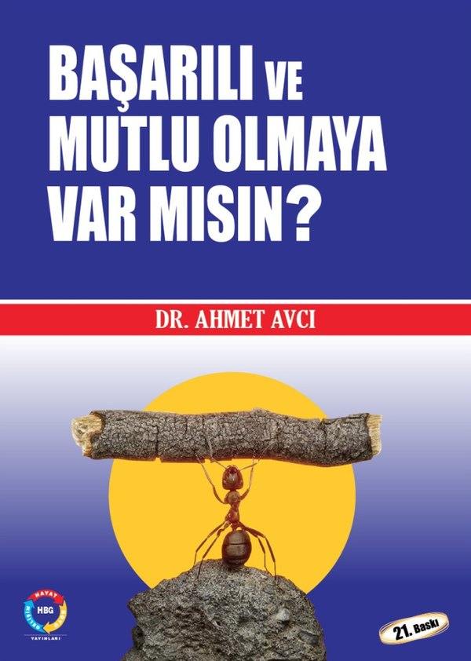
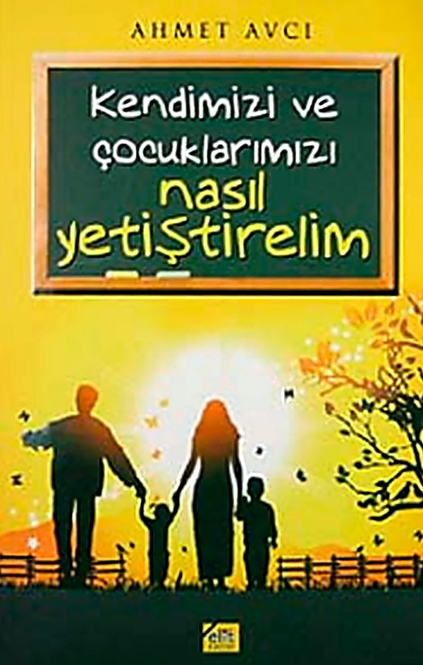
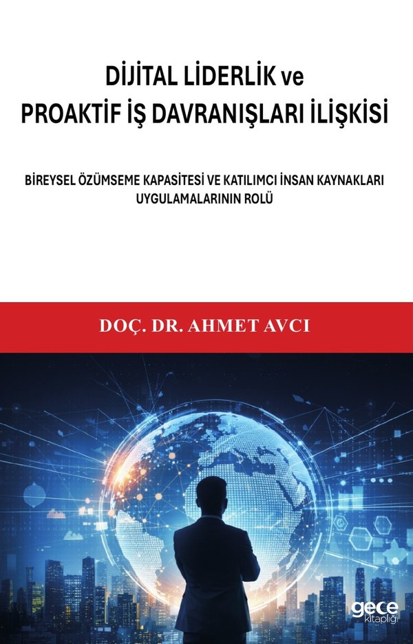
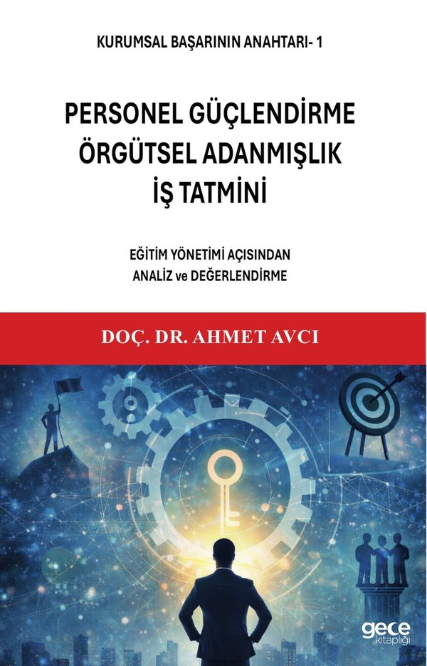
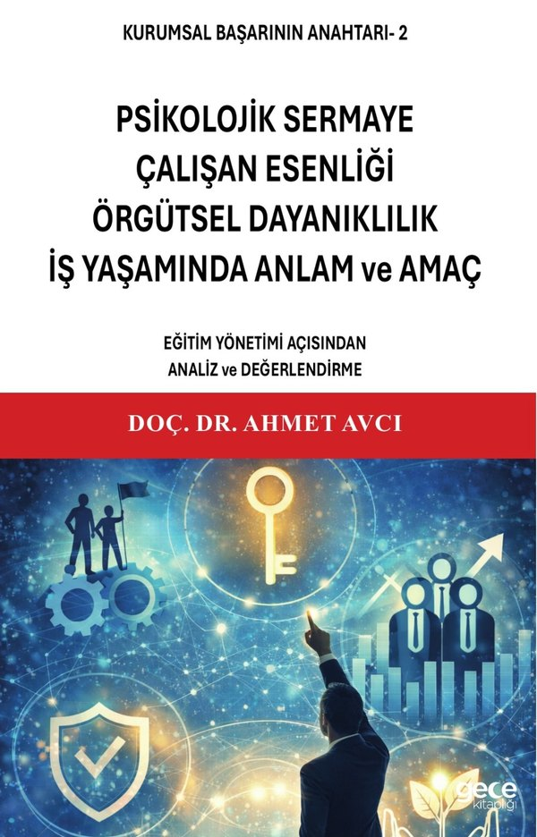
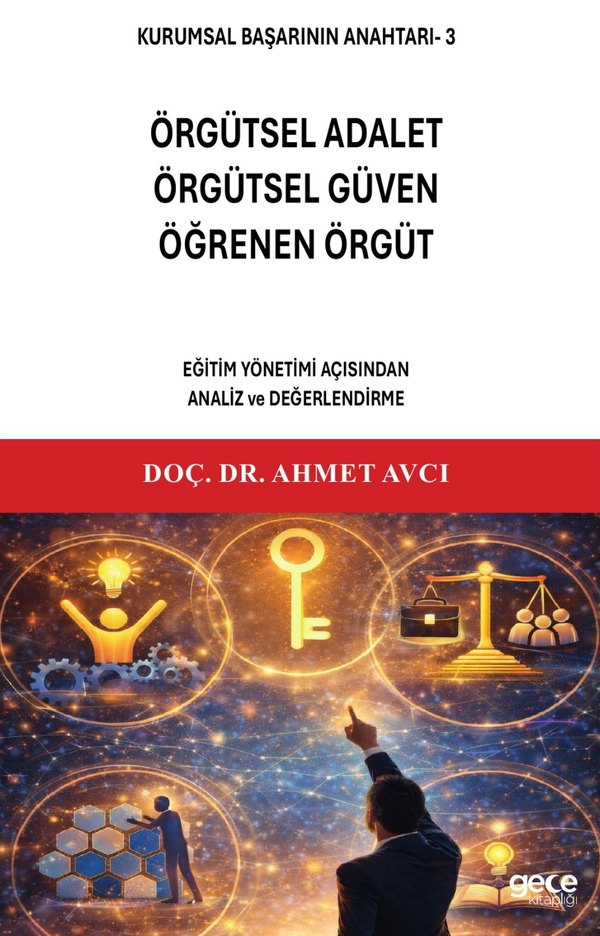
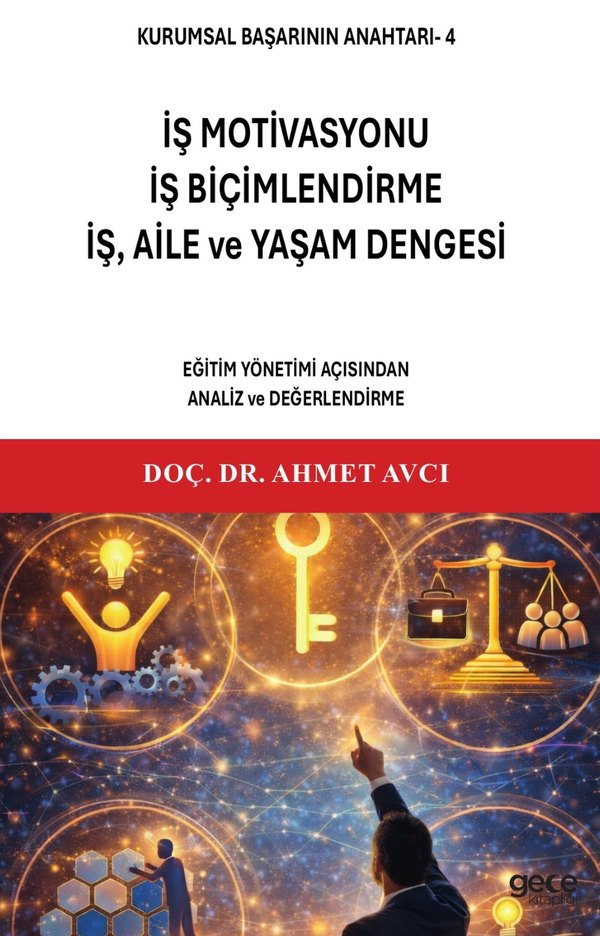
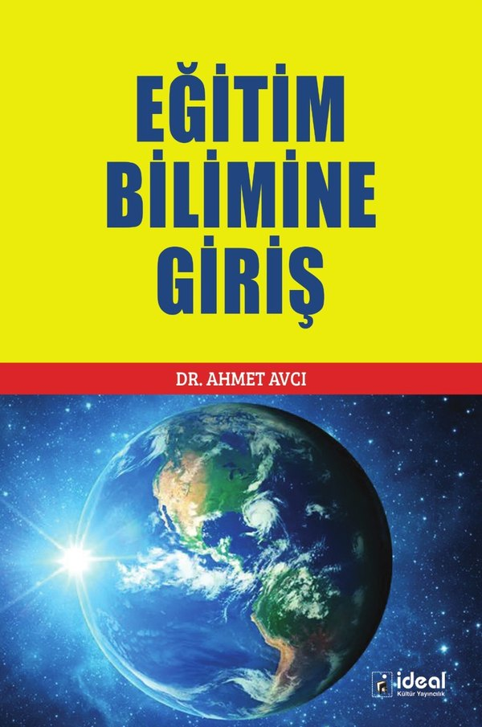

Başarılı ve Mutlu Olmaya Var mısın?
Öğrencilere ve gençlere başarıyla mutluluğu birlikte kurmanın yollarını anlatan bir rehber.
İlk bölümü indir · yakındaSatın al · yakında
Kitaplar
Öğrenciler, aileler, eğitimciler ve yöneticiler için yazılmış kitaplar.

Öğrencilere ve gençlere başarıyla mutluluğu birlikte kurmanın yollarını anlatan bir rehber.
İlk bölümü indir · yakındaSatın al · yakında

Aile içi iletişim, anne-baba tutumları ve çocuk yetiştirme üzerine anne ve babalar için bir kitap.
İlk bölümü indir · yakındaSatın al · yakında

Bireysel özümseme kapasitesi ve katılımcı insan kaynakları uygulamalarının rolü.
İlk bölümü indir · yakındaSatın al · yakında

Kurumsal Başarının Anahtarı 1. Eğitim yönetimi açısından analiz ve değerlendirme.
İlk bölümü indir · yakındaSatın al · yakında

Kurumsal Başarının Anahtarı 2. Eğitim yönetimi açısından analiz ve değerlendirme.
İlk bölümü indir · yakındaSatın al · yakında

Kurumsal Başarının Anahtarı 3. Eğitim yönetimi açısından analiz ve değerlendirme.
İlk bölümü indir · yakındaSatın al · yakında

Kurumsal Başarının Anahtarı 4. Eğitim yönetimi açısından analiz ve değerlendirme.
İlk bölümü indir · yakındaSatın al · yakında

Eğitim bilimlerinin temel konularını bir arada ele alan kapsamlı bir kaynak kitap.
İlk bölümü indir · yakındaSatın al · yakında
Kitapları satın almak veya toplu sipariş ve imza günü için bize yazın.